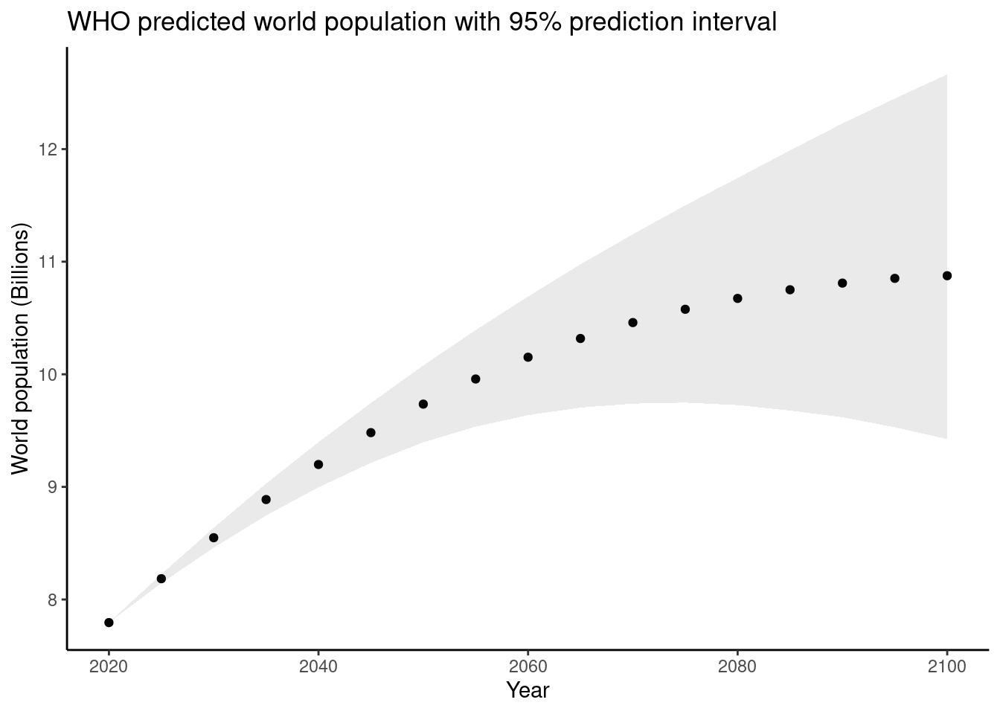
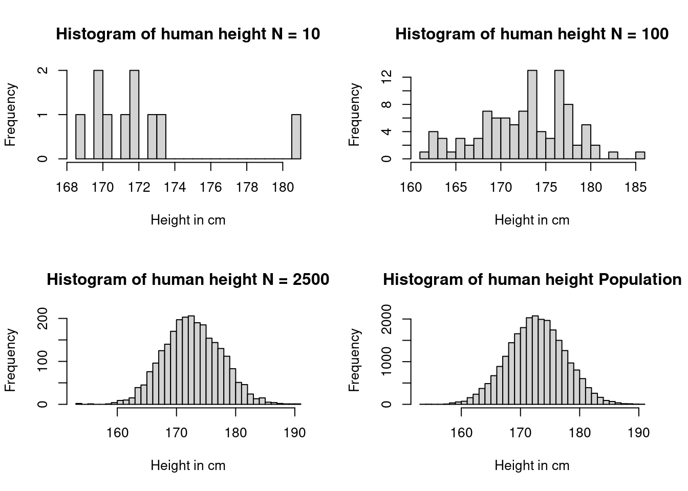
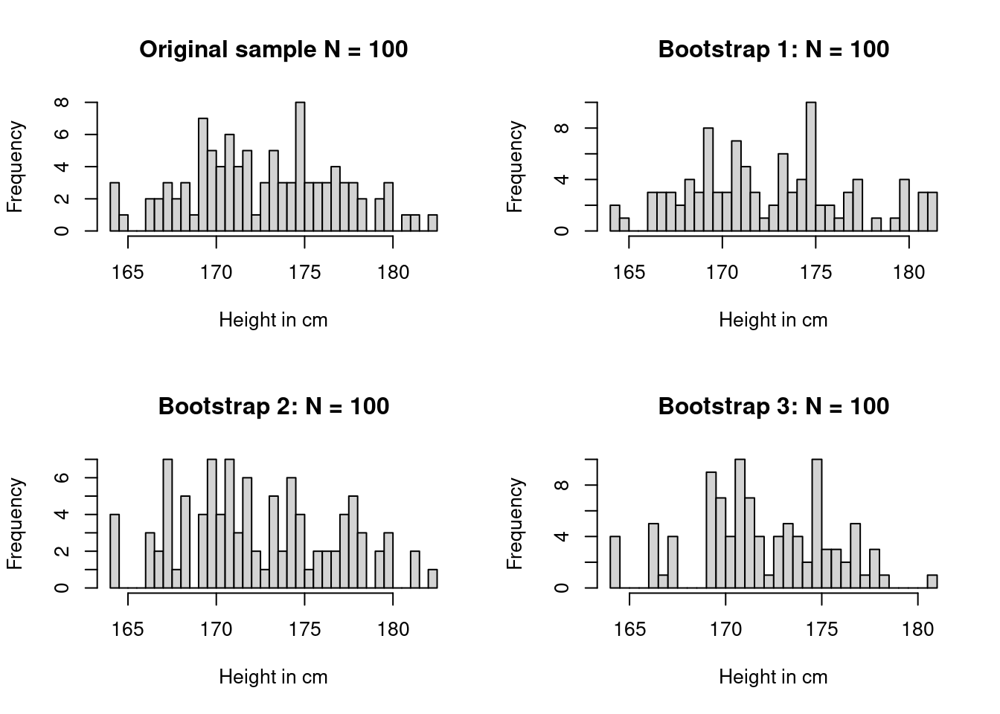
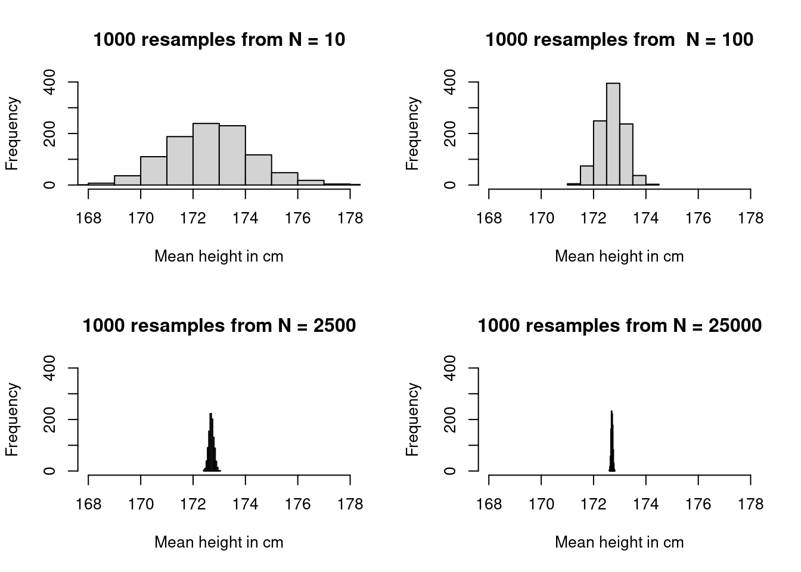
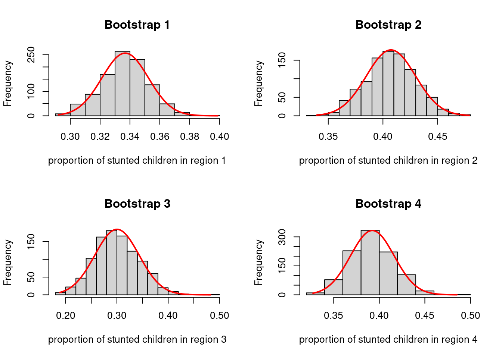

8How sure can we be about what is going on: Estimates and intervals
In statistics we often make estimates based on samples of data from a population as we discussed in unit 3 or we make predictions of future values of a variable using models as discussed in unit 4. But how precise are these estimates? Do they vary a lot or only a little? Estimates are not worth very much, if we are not able to quantify such uncertainty. In this unit we will learn a first technique based on computation to do so, the bootstrap.
Overview
In this unit you will learn how to quantify uncertainty intervals for your statistical estimates as well as for your predictions by using computational methods. Being able to do this is a very important part of communicating statistics.
Bootstrapping is the technique we will learn in this unit. Bootstrapping a sample consists of creating new datasets of the same size by resampling the original data with replacement.
The distribution of some inportant sample statistics such as the mean or the median of a datset when computed using bootstrapping resamples are approximated by a normal curve for larger datasets, regardless of the shape of the original distribution.
Uncertainty intervals based on bootstrapping depend on modern computing power. They do not require assumptions about the mathematical description of the population distribution and do not require complex probability theory beyond the intuitive idea of random sampling with replacement.
Since the computational method of the bootstrap depends on repeated computations on random draws from a sample, you need to understand how to implement and use iteration as a computational technique. In this unit you will learn to work with for-loops in R and make use of them to quantify uncertainty. Since the objects of a resample can be complex you learn also about a new datastructure of R the R list-class which is very flexible in storing data or all types and shapes.
Keywords
Population: A population in statistics represents every possible individual element we would like to measure.
Sample; A sample is a part or subset of the population.
Predictions with statistical models or estimates of statistics from samples have a margin of error, which we need to be able to quantify to assess the quality of a prediction or an estimate.
Bootstrapping is a computational technique of creating from a given dataset new datasets of the same size by resampling at random the original data with replacement making the assumption that the sample is approximately distributed similarly as the population.
Central Limit Theorem: When a statistics, such as for example the mean, is repeatedly computed from random resamples these computed values tend to be distributed symmetrically and approximated by a normal curve for large sample sizes. This holds irrespective of the shape of the initial distribution of the data.
Lists: Lists are an important class of objects in R. They are able to contain elements of different types like − numbers, strings, vectors and another list inside it. List is created using the list() function.
for-loops: For loops in R implement iterations of computations. They are an indispensable tool to iterate repeated computations. A for look consists of three key elements. The preallocated output, the specification of a sequence and the body of the for loop.
How many people will there be on the planet in 2100? Nobody knows, but we can make use of our experience from the past and our knowledge of demographic mechanisms to build models, which support us in making systematic predictions. You did work out such a prediction model in your last project work of “people-count” using a regression model.
In 2020 the World Health Organisation WHO published one of it’s global population forecast. The WHO needs high quality predictions of population numbers to plan their programs. They also use a prediction model but it is more sophisticated than the linear model we used in the last unit. The WHO model takes many factors into account. Here is a picture that illustrates their prediction:
Code
whopredplot <- worldpop_pred %>%filter(country =='WORLD') %>%ggplot(aes(x = year)) +theme_classic() +geom_point(aes(y = population*1e-06)) +geom_ribbon(aes(ymin = population_lower95*1e-06,ymax = population_upper95*1e-06),alpha = .1) +labs(title ="WHO predicted world population with 95% prediction interval",x ="Year",y ="World population (Billions)")whopredplot

What you see in the picture are dots indicating the WHO prediction about how many people will be there on the planet in future years, starting from 2020, the year this prediction was produced. The points are shown for five year intervals on the horizontal axis and give the population count estimate on the vertical axis. So for instance for 2040 the prediction is a number slightly more than 9 billion. The precise number is 9.198847 billion.
But there is also a gray area surrounding the points. This area represents a margin of error that belongs to this prediction. There is an upper bound and a lower bound to this margin. The upper margin of error is 9.396987 billion and the lower margin of error is 8.996324. So there could be about 200 million people more or about 400 million people less. These are huge margins. This is a margin of error comprising almost 2-times the size of the population (roughly 333 Million as of 2022) of the United States of America. If you go further out into the future, say to the year 2080, this margin of error increases. Worse than that: While for 2080 the point estimate would still predict some sort of stabilization, the upper margin would indicate an increase, while the lower margin would indicate a decrease in the world population. So within the margin of error the predictions would even be qualitatively different.
Knowing the margin of error is important in order to get a more precise idea about the quality of the prediction. Anyone can make an estimate. But the real challenge is to make an realistic assessment of the possible error. This is a crucial element of statistics as a science and in this unit we are going to learn the basic skills needed for making such assessments now.
The importance of having a reasonable idea about the margin of error doe not only refer to predictions but to any other statistical estimate depending on limited information.
The data on population counts collected by the WHO will be mostly be based on surveys. Let us assume the surveys are all well designed and accurately executed. Assume that the people and institutions who have conducted the surveys have been very careful to avoid biases. Then the summary statistics calculated from the sample, such as the mean or median age of the people counted or any other statistics calculated from the sample, should be close to the value of the statistics in the study population.
In a well designed study we expect the sample statistics, like the mean the median the standard deviation and the interquartile range to be close to the mean, median, standard deviation and interquartile range of the study population.
In the communication of data often only the summary statistics is reported and sometimes this may be enough. But knowing the uncertainty attached to the estimate will be important. It can even qualitatively change the information, as in our example, where the WHO forecast for the global population in 2080 could mean an increase as well as a decrease of the numbers. Knowing the exact differences between the sample and the population, or knowing the uncertainty in a prediction may be necessary for proper statistical inference.
Let us return to a dataset we have studied before, when we discussed how we get from information about a sample to information on the study population. Let us take our data socr_height_weight about height and weight of 25000 18 year old people we had discussed in unit 3. We retrieve the data from the JWL package and change the units of height from inches to cm and of weight from pounds to kg. Then we store the data in an R object which we call dat for simplicity.
To illustrate how the accuracy of statistics depends on sample size, let us take the data on human height and assume the 25000 data we have are the population and use our function emp_distr_height() to draw random samples from this population. In unit three we had drawn samples of 10, 100 and 2500.
The distributions of these various samples are shown in the following figure.
Code
par(mfrow =c(2, 2))h10 <-emp_distr_height(10)hist(h10$Height, breaks =30,main ="Histogram of human height N = 10",xlab ="Height in cm",ylab ="Frequency")h100 <-emp_distr_height(100)hist(h100$Height, breaks =30,main ="Histogram of human height N = 100",xlab ="Height in cm",ylab ="Frequency")h2500 <-emp_distr_height(2500)hist(h2500$Height, breaks =30,main ="Histogram of human height N = 2500",xlab ="Height in cm",ylab ="Frequency")hist(data$Height, breaks =30, main ="Histogram of human height Population",xlab ="Height in cm",ylab ="Frequency")

As the sample size gets smaller the sample gets more and more “bumpy” because the histogram becomes sensitive to individual data points. Only as the sample gets larger we come closer to the actual population distribution. This is also intuitively clear. If somebody would tell you he had measured 10 adults from Kenya and concludes that their average height is some number, this is less credible than in a case where the statement was based on a much larger number of observations.
Let’s go back to our problem at hand. What can we say about the mean height in our ficticious population based on our different samples?
You can see from the table that with substantive larger sample sizes our estimation of the mean becomes more and more precise.
8.1 Quantifying uncertainty by bootstraping: The basic idea.
In order to quantify the accuracy of our statistics we now have to work out a thought experiment. If we assume that we repeatedly drew samples of 25000 individuals of 18 years an each time measured their mean height, by how much would the statistics - the mean height - vary?
If we knew how this statistics would vary, then we could say something about the accuracy of the statistics. But the precise variablity of the estimates depends on knowledge of the population. But this knowledge is exactly the knowledge we do not have.
There are in principle two ways out of this circular reasoning. We could bring in probability and mathematics to make assumptions about the population distribution and work out the variability we would expect under these assumptions and thus how far away our statistics in our sample is from the value we would theoretically expect. This is an approach you learn in every statistics course and we will learn it too later in this course.
Here we take a second approach based on computation. We start from the plausible assumption that the population and the sample should roughly look the same. Since we can not draw repeated samples from the unknown population , we instead draw repeated samples from our sample.
Let us illustrate this idea with our height data. Let us take the sample of 100 and draw take three bootstrap resamples from this sample.
Code
set.seed(123)par(mfrow =c(2, 2))hist(h100$Height, breaks =30, main ="Original sample N = 100",xlab ="Height in cm",ylab ="Frequency")data <- h100b1 <-emp_distr_height(100)hist(b1$Height, breaks =30,main ="Bootstrap 1: N = 100",xlab ="Height in cm",ylab ="Frequency")b2 <-emp_distr_height(100)hist(b2$Height, breaks =30,main ="Bootstrap 2: N = 100",xlab ="Height in cm",ylab ="Frequency")b3 <-emp_distr_height(100)hist(b3$Height, breaks =30,main ="Bootstrap 3: N = 100",xlab ="Height in cm",ylab ="Frequency")

At the top left corner of this figure you see our original sample of 100 height data from our original population of 25.000, which has a mean of 172, 2100 data points in sequence, each time replacing the point we have taken, and get the second distribution in the top right corner in this way. This distribution has a mean of 173.13. The distribution can only contain data points taking on the same values as in the original sample, but it will contain different number of each value. Therefore the shape of the distribution will vary slightly and give a slightly different mean. In our case these means are 171.68, 173.13, 171.95.
Thus the resampling procedure gives us an idea how our statistics varies through this procedure of resampling with replacement. Why do we need replacement? We want to make sure that at every resample, every data point has the same chance of ending up in the resample. This would not be the case if we drew observations away once the have ended up in one sample. This is known as bootstraping the data. There is something “magic” about this approach, reflected in the name: As if pulling oneself up by one’s own bootstraps, here we learn about the variability of an estimate without making assumptions about the shape of the population distribution. We think of the sample as beeing a representation of the underlying population. If we draw random resamples we always need to draw from the same sample of the population so that every individual in the sample has the same chance of ending up in the resample.
Repeating the resampling many times, say 1000 times, we get 1000 possible estimates of the mean. Let us do this repeated resampling for the examples of sample sizes of 10, 100, 2500 and in the end 25000, the size of our fictitious population.
Code
# Bootstrap: sample with replacementset.seed(45356) # So you can reproduce my resultsdata <- socr_height_weightdata$Height <- data$Height*2.54data$Weight <- data$Weight*0.4535924B <-1000# Number of bootstrap resamples to taken <-c(10,100,2500, 25000)out <-vector("list", length(n))for(j inseq_along(n)){bootstrapmeans <-vector("double", length = B)for (b in1:B) {# Draw a bootstrap sample bootstrapsample <-sample(data$Height,n[j],replace =TRUE)# Compute the bootstrap estimate bootstrapmeans[b] <-mean(bootstrapsample)}out[[j]] <- bootstrapmeans}
Code
par(mfrow =c(2, 2))hist(out[[1]], xlim =c(168,178), ylim =c(0,400),main ="1000 resamples from N = 10",xlab ="Mean height in cm")hist(out[[2]], xlim =c(168,178), ylim =c(0,400),main ="1000 resamples from N = 100",xlab ="Mean height in cm")hist(out[[3]], xlim =c(168,178), ylim =c(0,400),main ="1000 resamples from N = 2500",xlab ="Mean height in cm")hist(out[[4]], xlim =c(168,178), ylim =c(0,400),main ="1000 resamples from N = 25000",xlab ="Mean height in cm")

Note that the distribution of the estimates of the mean based on the resampled data is symmetric around the mean. The deeper mathematical reason for this fact is the so called Central Limit Theorem, which says that the distribution of sample means tends towards a normal distribution with increasing sample size almost regardless of the shape of the original distribution of the data. We will discuss this result in further detail later in the course.
The bootstrap distributions allow us to quantify the uncertainty connected to the estimate of the mean based on the sampled data. For example, we can find the range of means that contain 95 % of all the means of the bootstrap resample and call this the 95 % uncertainty interval for the original estimates, or the margins of error.
Also observe that the bootstrap distributions get narrower as the sample size increases. This means that uncertainty shrinks and the estimate becomes more precise.
One of the appeals of the bootstrap approach to quantify uncertainty is that we were able to do this without any mathematics but the idea of drawing observations at random. All we need is an estimate and a sampling distribution. Thus the quantification of uncertainty is almost entirely based on computation.
We did, so far, not show you the details of how the computations are done. We will introduce these concepts now. They will enlarge the frontier of your R knowledge by the concept of R’s list class as well as the concept of computational iteration.
8.2 Doing bootstraps using R
It is now time to learn some more R, in order to do the computations needed for a bootstrap. One convenient data structure in this context is R’s list class. The other very useful concept, which you will very often need in computation and coding is the concept of iteration. Let us begin with the R-list class.
8.2.1 The R list class
Let us for a moment go back to the children nutrition data from the DHS survey we discussed in unit 2 and load this dataset again and store them in a variable with a simpler name.
library(JWL)dhs_data <- children_nutrition_data
In unit 2 we discussed one approach how we could compute the number of cases of stunting across the four regions in the dataset. In the exercises we discussed how to do the same computation more efficiently using the tapply() function.
Let us introduce here a related function, called split(). There are usually several ways in R how we can filter data. In unit 2 we used the which() function to compute indices for the appropriate rows we wanted to select from our dataframe. Another way could be, like this:
We can do this region by region and compute the shares also for regions 2, 3 and 4.
Here is a faster and cleaner way to achieve the same thing using split():
regions <-split( dhs_data[ ,c("wt", "nt_ch_stunt", "region")], dhs_data$region )lapply(regions, head)
$`region 1`
wt nt_ch_stunt region
323 0.262466 TRUE region 1
425 0.262466 FALSE region 1
495 0.262466 FALSE region 1
498 0.262466 FALSE region 1
826 1.846709 FALSE region 1
827 1.846709 FALSE region 1
$`region 2`
wt nt_ch_stunt region
16 1.049502 FALSE region 2
27 1.049502 TRUE region 2
36 1.049502 TRUE region 2
94 1.049502 FALSE region 2
106 1.049502 FALSE region 2
113 1.049502 TRUE region 2
$`region 3`
wt nt_ch_stunt region
1025 0.457125 TRUE region 3
1026 0.457125 FALSE region 3
1039 0.457125 TRUE region 3
1102 0.457125 FALSE region 3
1103 0.457125 TRUE region 3
1124 0.457125 FALSE region 3
$`region 4`
wt nt_ch_stunt region
149 0.925559 FALSE region 4
158 0.925559 FALSE region 4
159 0.925559 FALSE region 4
171 0.925559 TRUE region 4
172 0.925559 FALSE region 4
187 0.925559 TRUE region 4
Let’s unpack this piece of code: You already know the syntax dhs_data[ ,c("wt", "nt_ch_stunt", "region")]. This says that R should choose from the dataframe dhs_data all rows and the columns with the names “wt”, “nt_ch_stunt” and “region”. We could also have selected the columns by indices.
Now this (reduced) dataframe is given as one argument to the function split(). The second argument is the column dhs_data$region. This tells the split function the criterion how to split up the dataframe in data chunks by region, i.e. region 1, 2 etc.
The new split data are in an object called regions and this object has a new class
class(regions)
[1] "list"
This class is called in R a list. In this example the list regions contains four dataframes, which we can individually access using the $-sign. We use the head()function to avoid showing the entire dataframe. We applied the heads() function to all elements of the list by using the function lapply() short for list apply. This is a powerful functions allowing computations on elements of a list. Our list contains dataframes as elements. The syntax of lapply()takes as input some function - what do you want to do with the list elements? - and a list - the list containing the elements to which the function is applied. So in this case R applies the heads function to every entry in te list. So when we
head(regions$"region 1")
wt nt_ch_stunt region
323 0.262466 TRUE region 1
425 0.262466 FALSE region 1
495 0.262466 FALSE region 1
498 0.262466 FALSE region 1
826 1.846709 FALSE region 1
827 1.846709 FALSE region 1
Or we could alternatively use indices. But now for the list class we will need double brackets, like this:
head(regions[[1]])
wt nt_ch_stunt region
323 0.262466 TRUE region 1
425 0.262466 FALSE region 1
495 0.262466 FALSE region 1
498 0.262466 FALSE region 1
826 1.846709 FALSE region 1
827 1.846709 FALSE region 1
This retrieves the first dataframe from the list of dataframes.
Lists are particularly useful to store R objects of different types or classes. For example, one list entry can be a dataframe, another one can consist of characters, another of numbers and so on. The R -function list() creates a list the same way c creates a vector. Separate each element in the list with a comma: Here is a toy exmple:
l <-list(a =c(2,5), b ='sky')l
$a
[1] 2 5
$b
[1] "sky"
As we see in the toy example, we can give names to list elements. When we use split() the names will be taken from the columns according to which the data are split. If we don’t like these default names we can override them by using the names()function.
$`County A`
wt nt_ch_stunt region
323 0.262466 TRUE region 1
425 0.262466 FALSE region 1
495 0.262466 FALSE region 1
498 0.262466 FALSE region 1
826 1.846709 FALSE region 1
827 1.846709 FALSE region 1
$`County B`
wt nt_ch_stunt region
16 1.049502 FALSE region 2
27 1.049502 TRUE region 2
36 1.049502 TRUE region 2
94 1.049502 FALSE region 2
106 1.049502 FALSE region 2
113 1.049502 TRUE region 2
$`County C`
wt nt_ch_stunt region
1025 0.457125 TRUE region 3
1026 0.457125 FALSE region 3
1039 0.457125 TRUE region 3
1102 0.457125 FALSE region 3
1103 0.457125 TRUE region 3
1124 0.457125 FALSE region 3
$`County D`
wt nt_ch_stunt region
149 0.925559 FALSE region 4
158 0.925559 FALSE region 4
159 0.925559 FALSE region 4
171 0.925559 TRUE region 4
172 0.925559 FALSE region 4
187 0.925559 TRUE region 4
What if we wanted the third row of the dataframe of region 1?
head(regions[[1]][3, ])
wt nt_ch_stunt region
495 0.262466 FALSE region 1
Some of you may have noticed that the $ signs are both used to refer to columns in a dataframe as well as to elements of a list. This is no coindcidence, because in R dataframes are lists. Each column is one element of the list.
In the project “people count” you are working on in this course, we are often looking at countries comparatively. We looked for instance at Kenya, the United States and Japan and sometimes also at another country of your choice.
In coding it is an important principle to reduce duplication of code as much as possible. This has three main benefits it focuses on the essential parts of a code, it is easier and shorter to make changes and it also helps reducing bugs in your code.
One tool to reduce duplication of code you have already encountered. Here, you learn a second tool: Iteration. When you have to do tasks 1000 and more times, like in resampling from the same distribution, such tools are even necessary. These are tasks simply impossible to do by hand or by copy and paste.
8.2.2.1 For Loops
Imagine we have a simple dataframe, where we have four columns, each containing 10 random numbers from a normal distribution:
Now, assume we want to compute the mean of every column. In this little toy example, you could do this by hand and by copy and paste, if you chose and solve the task as follows:
mean(df$a)
[1] -0.008060505
mean(df$b)
[1] 0.1712027
mean(df$c)
[1] -0.8099074
mean(df$d)
[1] 0.1977989
A better way to solve such tasks is to use iteration and implement a for-loop. This looks like this:
output <-vector("double", ncol(df)) # 1. outputfor (i inseq_along(df)) { # 2. sequence output[[i]] <-mean(df[[i]]) # 3. body }output
The output: output <- vector("double", ncol(df)). Before you start a loop you need to allocate space for the results computed during the loop. This is essential for efficiency. Always preallocate space for the output This can in general best be done using the vector() function of R. It has two arguments, the class of the vector, numeric, logical, character etc. and the length of the vector.
The sequence: i in seq_along(df). This describes what you are looping over. Each iteration of the for loop will assign i to a different value from seq_along(df).
The body: output[[i]] <- mean(df[[i]]). This is the code that does the actual work in the for loop. It i run repeatedly with each i. When iis 1 the computation will be output[[1]] <- mean(df[[1]]), when it is 2, we will have output[[2]] <- mean(df[[2]]) etc.
Let us apply this technique to a problem you had worked on before in your project work “people count”. There you were asked to find a way to compute the mean age of a country for a situation where you do not have individual data but data grouped by age groups. The main idae there was to take the mid point of the age group as an approximation for the age and multiply with the population sized in the age group. Then sum over all age groups and divide by the total population size. Now if you do this for many countries this is a typical situation where you want both functions and iteration. Let us take this case as an example to show how interation works in R.
First we load the data using the JWL library and assign them to an object with a simpler name to make our life easier.
Now assume we want to compute the mean age of Kenya, the US, Japan and Austria, which happens to be my country. Instead of computing this case by case by recycling an multiplying code, we do this using iteration.
Let’s first write a function, which computes the mean for our grouped data. The function should take the entire demographic dataframe as an input and the country and year we choose as an argument. It can then be applied to any country and any year by just specifying the correct argument and providing the dataframe once.
Let’s start with the function:
mean_age <-function(country, year, data){# select the data for a given dataframe for a given country and a given year pop_dat <- data[data$Country == country & data$Year == year, ]# compute the mean age per age group by assuming that the age in a group #is approximated by# the mid point. For example, if the age group is 0-4 we assume the mean # age is 2, if it is # 5 - 9 it is 7 etc. We do this by creating an appropriate sequence. mid <-seq(from =2, to =100, by =5)#compute the mid age. Note that we use the R recycling rules. Mid has only #half the length of # pop_dat$POP, because pop_dat$POP contains first all rows for females and #then for males. Once# mid is exhausted at age group 95-99 for females it just begins from new for #men. By this we can# make the total sum without explicitly defining objects for each sex separately.# Compute the mean age rounded to two digits.round(sum(pop_dat$POP*mid)/sum(pop_dat$POP), 2)}
Now we start with the iteration:
# Define the list of countries we are interested in first:list_of_countries <-c("Kenya", "United States of America", "Japan", "Austria")# Preallocate space for four countries: The mean is usually some decimal # number, so the output of our iteration will be of type double. we will compute # one mean age per country, so the length of the output pre-allocation needs to # match the length of our country list.output <-vector("double", length(list_of_countries)) # 1. outputfor( i inseq_along(list_of_countries)){ # 2: sequence# 3. Body: Note the countries change over the iteration. Data and year stay # the same. output[[i]] <-mean_age(list_of_countries[i], year =2022, data = dat) }
And now, let’s check:
output
[1] 24.24 39.52 47.28 43.43
Let me explain how this works. In the first step R reserves a vector for the entry of four doubles. Then the sequence is specified: It says that it starts at entry 1 in the object list_of_numbers. This is in our example list_of_numers[1], which must be Kenya. Then it calls the function with this country specified as the country argument and the arguments for year and data set to our default values 2022 and dat. This output is written into the first entry of output and then the next iteration starts until the end of the country list, overwriting one component after the other with outputs from the computation.
There are lots of variations of iteration scenarios. We won’t go beyond this most basic case here
8.3 Standard error of a proportion
In unit 1 we computed proportions of stunted children in four of different regions and got these proportions as a mean to a series of TRUE or FALSE answers to an anthropometric measurements and a comparison with thresholds in a WHO incidence table. Let’s retrieve these data once more:
library(JWL)dhs_data <- children_nutrition_data
Let’s compute the proportions of stunted children per region using the tapplyfunction and taking account that each observation is weighted by the wt, the weight, variable.
# create the weighted variable and attach to dataframe as an addiional columndhs_data$weighted_nt_ch_stunt <- dhs_data$nt_ch_stunt*dhs_data$wt# compute total number of stunted children per regionstunted <-tapply(dhs_data$weighted_nt_ch_stunt, dhs_data$region, sum)# compute the total number of children per regiontotal <-tapply(dhs_data$wt, dhs_data$region, sum)# compute the proportions rounded to two digitsprop <-round(stunted/total,2)prop
region 1 region 2 region 3 region 4
0.34 0.41 0.30 0.39
Now we want to use the bootstrap to get an idea of how precise the estimates of these proportions are. According to the basic idea of the bootstrap we repeatedly resample from the empirical distribution. The estimated standard error of this means is then the standard deviations of these means, which are in our case the proportions per region.
We write the bootstrap function first. Within the function we built in a for loop to do the repeated resampling.
bootstrap <-function(B, data){ boot <-vector("list", B) # output allocationfor (b inseq_along(1:B)){ # sequence aux <- data[sample(x =1:nrow(data), size =nrow(data), replace = T), ] aux$weighted_nt_ch_stunt <- aux$nt_ch_stunt*aux$wt stunted <-tapply(aux$weighted_nt_ch_stunt, aux$region, sum) total <-tapply(aux$wt, aux$region, sum) boot[[b]] <- (stunted/total) # body } res <-do.call(rbind, boot)as.data.frame(res)}
Before we look at the numerical results, let us unpack this code. Here we have put the iteration inside the function. The function arguments are the data and the number of bootstrap resamplings, which we call here \(B\).
The function does \(B\) random samples from the data. We use a list as an output vector, because at every iteration we will get a named vector of results, with four means for every region.
Now we define the sequence. We do \(B\) bootstrap samples in total. You see that the running index can have any legitimate symbol. Before we called it \(i\) and here we call it \(b\).
Then we sample rows from our dataframe at random with replacement. This is exactly similar to our discussion in unit 3 where we took random samples from the dataframe of human heights. We save this in an r-object which we chose to call auxhere (for auxiliary). Then we do the same computation of the mean we did before and store the result in list element \(b\).
In the end we have boot filled with \(B\) vectors with components showing the means of region 1 to 4.
In the end we use an R-function to transform the list back into a dataframe. This function is called do.call() and works as follows: The first argument is a function. It specifies what do.call()does to every element in the list. The function we chose is called rbind() (for row bind) it binds together rows in a dataframe. The result is stored in an R object called res and res is then the output. With as.data.frame()we tell R to give this result the class of a dataframe. Thus our output is a dataframe with 1000 rows and 4 columns, each column specifiying a region.
Now we can pin down the bootstrapped mean and standard deviation. Let’s give it a try. We first take 1000 bootstrap resamples from our data and compute the weighted means or proportions for all four regions:
boot <-bootstrap(1000, dhs_data)
Now we have a dataframe with 4 columns and we want to compute the mean and sd for every column. Here we can practice iteration once more:
This should look very familiar to you by now. We allocate the space for the output for the means and the standard deviations. Then in the for-loop we compute the mean for every row and the standard deviation for every row. Finally we write everything into a dataframe. The final line uses the kable() function from the knitr package. This allows a particular layout for the dataframe. It gives you by the way an alternative way to call functions from a package without running the library() function first. When the package is installed functions from the package can be called by the syntax package_name::function_name.
Let’s look at the numbers first. We observe a few things. First, observe that the standard deviation is largest for region 3, where the mean can vary by four percentage points as compared to 2 percentage points in all the other regions. While the proportion seems highest in region 2, within the precision of the estimate it will be difficult to distinguish it from region 4.
Let us look at the histogram of the bootstrap-distribution of the means:
Code
par(mfrow =c(2,2))hist_data1 <-hist(boot[ ,1], main ="Bootstrap 1", xlab ="proportion of stunted children in region 1")#define x and y values to use for normal curvex_values <-seq(min(boot[ ,1]), max(boot[ ,1]), length =length(boot[ ,1]))y_values <-dnorm(x_values, mean =mean(boot[ ,1]), sd =sd(boot[ ,1])) y_values <- y_values *diff(hist_data1$mids[1:2]) *length(boot[ ,1]) #overlay normal curve on histogramlines(x_values, y_values, lwd =2, col ="red")hist_data2 <-hist(boot[ ,2], main ="Bootstrap 2", xlab ="proportion of stunted children in region 2")#define x and y values to use for normal curvex_values <-seq(min(boot[ ,2]), max(boot[ ,2]), length =length(boot[ ,2]))y_values <-dnorm(x_values, mean =mean(boot[ ,2]), sd =sd(boot[ ,2])) y_values <- y_values *diff(hist_data2$mids[1:2]) *length(boot[ ,2]) #overlay normal curve on histogramlines(x_values, y_values, lwd =2, col ="red")hist_data3 <-hist(boot[ ,3], main ="Bootstrap 3", xlab ="proportion of stunted children in region 3")#define x and y values to use for normal curvex_values <-seq(min(boot[ ,3]), max(boot[ ,3]), length =length(boot[ ,3]))y_values <-dnorm(x_values, mean =mean(boot[ ,3]), sd =sd(boot[ ,3])) y_values <- y_values *diff(hist_data3$mids[1:2]) *length(boot[ ,3]) #overlay normal curve on histogramlines(x_values, y_values, lwd =2, col ="red")hist_data4 <-hist(boot[ ,4], main ="Bootstrap 4", xlab ="proportion of stunted children in region 4")#define x and y values to use for normal curvex_values <-seq(min(boot[ ,4]), max(boot[ ,4]), length =length(boot[ ,4]))y_values <-dnorm(x_values, mean =mean(boot[ ,4]), sd =sd(boot[ ,4])) y_values <- y_values *diff(hist_data4$mids[1:2]) *length(boot[ ,4]) #overlay normal curve on histogramlines(x_values, y_values, lwd =2, col ="red")

We have overlayed all four distributions with a normal curve. You see that the fit is pretty good. This is no accident, as we will learn the deeper reason for this in the coming units.
8.4 Regression and the Pearson height data
One of the appeals of the bootstrap is that it is very general. Any estimate can be bootstrapped. All we need is an estimate and a sampling distribution. The bootstrap can be performed algorithmically without the need of a formal probability model. We can apply this idea to any situation where we need to quantify uncertainty.
In unit 5 we fitted a regression line to the heights data of fathers and son collected by Pearson in 1903. Let us come back to this analysis now.
library(JWL)dat <- pearsonmod <-lm(Son ~ Father, data = dat)mod
Call:
lm(formula = Son ~ Father, data = dat)
Coefficients:
(Intercept) Father
33.893 0.514
Our estimated coefficient were \(33.89\) for the intercept and \(0.514\) for the slope. How confident can we be about the position of the regression line? We could answer this question by bootstrapping.
Let us take a bootstrap resample of the 1078 Father and Son pairs with replacement. From the data we fit a least squares line. Repeating this many times we can compute a 95% interval for the coefficient. Let’s use R to implement this idea.
B <-1000output <-vector("list", length = B)for(i inseq_along(1:B)){ aux <- dat[sample(x =1:nrow(dat), size =nrow(dat), replace = T), ] mod <-lm(Son ~ Father, data = aux) output[[i]] <- mod$coefficients}res <-do.call(rbind, output)result <-as.data.frame(res)
This code should be no mystery for you by now. One point is worth mentioning though. When we call the lm() function to do a least suqare fit of the regression line, we store the output in an R object called mod. When R performs the computations implemented in lm() it does not only compute the coefficients of the regression line but a lot of more different things and stores them in a list. The value of the coefficients are stored in a list element with the name coeffcients. Thus we store the value of the coefficients by assigning mod$coefficients to the object where we store the results.
When we compute the mean and the standard deviation of the coefficient, we get:
round(mean(result$Father),2)
[1] 0.51
95 % of the values of the coefficient are between the 2.5 and the 97.5 percentile. This can be computed using the quantile() function:
This gives you a sense of the range where the coefficient value of this can fall with high confidence.
8.5 Uncertainty quantification beyond the bootstrap
Bootstrapping provides an intuitive way of assessing uncertainty of estimates. The method is computer intensive and needs computing technology and capacity. Since these tools are becoming available more widely and at ever lower cost, this is an attractive approach when we need to judge the uncertainty we should attach to our estimates.
The bootstrap is a very powerful method but always keep the following things in mind:
Things to keep in mind about the bootstrap
Try to start with a sufficiently large random sample. Note that the sample and hence the resample will only resemble the population distribution if the sample is large enough.
To approximate the distribution of a statistics, like a mean, a median etc. replicate the resampling procedure very often. To get a decent approximation a few thousand resamples will be good. As a rule of thumb you could use 5000 or 10000, dependning in the computational ressoruces available to you.
The bootstrap percentile method works well for estimating the population mean of median based on a large random sample. It is not expected to work very well when the minimum or maximum should be estimated or when we look for very low or very high percentiles or other parameters that are strongly influenced by extreme observations. It also does not work well when the distribution of the statistics is not symmetric or well approximated by a normal curve. It also does not work well when the sample is very small say lower than 10 or 15.
Bootstrapping reaches its limit when very large quantities of data are involved. Here we have reached the limits of what we can learn about statistics without taking resort to the (mathematical) theory of probability.
In such cases, when we need to deal with very large quantities of data, bootstrapping is too clumsy. In these cases we need to resort to the elegant and effective mathematics of uncertainty which is based on the theory of probability, which we explore in the next unit. We will only introduce the basic ideas without using too much mathematics. These ideas will be necessary to understand how we can leverage probability theory to quantify uncertainty.
8.6 Exercises
8.6.1 Exercises:
Exercise 1: Thirsty students
Assume you are interested in the amount of water the student coming to the JWL study center consume in a day. In particular you want to learn about the proportion of students that drink more than 2 liters of water per day. You take a random sample of 100 students in the students directory of the study center and obtain from them the information about how much water they drink in a day at the study center. You store your results in a dataframe you call water. The dataframe has one column called amount which stores the number of liters each of the students drink.
Write one line of R-code to compute the proportion of students who drank more than 2 liters of water. Hint: You can write this line of code also when you are not at the computer. You can solve this exercise by thinking about what you would write, if you had an R console or a Jupyter book opened in front of you.
Write one line of R-code to compute a single bootstrap resample from the water dataframe.
Exercise 2: Check your understanding of why the bootstrap works
When we conduct a bootstrap resample, what size resample should we draw from our sample? Why? Hint: There is no unique answer to the size question only rules of thumb. When you think about the why, go back to consult our discussion on why random sampling works in unit 2.
Why do we need to sample with replacement?
When we conduct a bootstrap resample, what is the underlying assumption/reasoning for resampling from our sample? Why does it work?
8.6.2 Exercises R
Exercise 1: A toy problem for practicing iteration
Load the pearson height data from the JWLpackage and transform the data to standard units using a for loop. Hint: You will need a function and an interation over the columns of the dataframe.
Exercise 2: Bootstrapped interquartile range of height data
To practice the bootstrapping technique we learned in this unit, let us load the human height data socr_height_weight once again from the JWL package. Take a sample of 5000 of the height data and compute the interquartile range. Implement a bootstrap with 10000 resamples to quantify the uncertainty in the sample inter quartile range for the inter quartile range, i.e. the difference between the 25 and the 75 percentile of the height distribution. Compute the range in which 95 % of the inter-quartile-ranges lie. You can leave the data for this exercise in the original units of inches. Hint: For the interquartile range consult the passage on percentiles in unit 3. If you do 10000 bootstraps this might take a while in times of computation. As long as the In [*] cell has a star in the brackets and not a number, the computation is still going on. So you will need a bit of patience for computing this exercise.
8.7 Project People count: The present and future of humanity in pictures and numbers
8.7.1 How precise are our estimates of the mean age ?
In our project in unit 2 we estimated the mean age of the population in Kenya, the United States and Japan as well as in your own country in the year 2022. In this project we will leverage our knowledge of the bootstrap to attach some uncertainty interval to our estimate. Let us use Kenya as an example in this part of the project for. You may also choose your own country if you are more interested in this particular case.
Filtering the data for Kenya (or any other country): This is a repetition of what we have done already previously. Take the data population_statistics_by_age_and_sex from the JWL package and store it in an R object. Check whether the data you get in this way is what you want.
Implement a bootstrap for the mean age in Kenya (or the country of your choice) using your previous results and the techniques you learned in this unit and report the bounds that contain 95 % of these estimates based on 5000 resamples from the appropriate distribution.
What kind of data would you need to get a more precise estimate? What do you think? Explain in a few sentences.